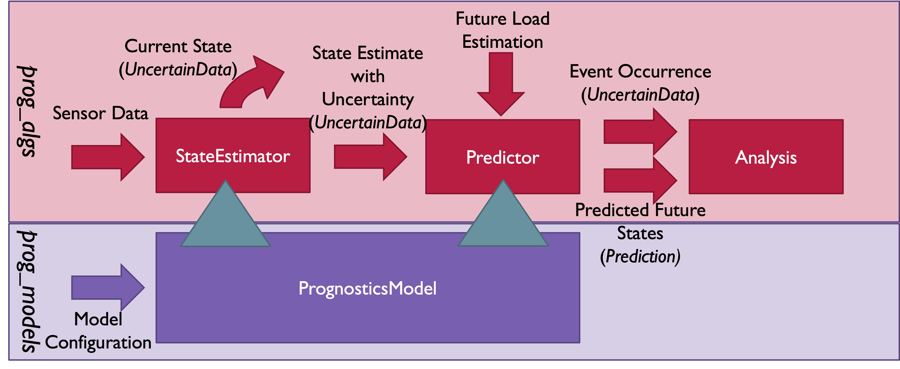

Getting Started¶
The NASA Prognostics Algorithms Package is a python framework for defining, building, using, and testing Algorithms for prognostics (computation of remaining useful life) of engineering systems, and provides a set of prognostics algorithms developed within this framework, suitable for use in prognostics applications. It can be used in conjunction for the Prognostics Models Library to perform research in prognostics with prognostics systems.
Installing¶
Installing from pip (recommended)¶
The latest stable release of prog_algs is hosted on PyPi. For most users (unless you want to contribute to the development of prog_algs), the version on PyPi will be adequate. To install from the command line, use the following command:
$ pip install prog_algs
Installing pre-release versions with GitHub¶
For users who would like to contribute to prog_algs or would like to use pre-release features can do so using the ‘dev’ branch (or a feature branch) on the prog_algs GitHub repo. This isn’t recommended for most users as this version may be unstable. To use this version, use the following commands:
$ git clone https://github.com/nasa/prog_algs
$ cd prog_algs
$ git checkout dev
$ pip install -e .
Summary¶
A few definitions to get started:
events: something that can be predicted (e.g., system failure). An event has either occurred or not.
event state: progress towards event occurring. Defined as a number where an event state of 0 indicates the event has occurred and 1 indicates no progress towards the event (i.e., fully healthy operation for a failure event). For gradually occurring events (e.g., discharge) the number will progress from 1 to 0 as the event nears. In prognostics, event state is frequently called “State of Health”
inputs: control applied to the system being modeled (e.g., current drawn from a battery)
outputs: measured sensor values from a system (e.g., voltage and temperature of a battery)
observables: performance characteristics of a system that are a function of system state, but are not directly measured.
states: Internal parameters (typically hidden states) used to represent the state of the system- can be same as inputs/outputs but do not have to be.
process noise: stochastic process representing uncertainty in the model transition.
measurement noise: stochastic process representing uncertainty in the measurement process; e.g., sensor sensitivity, sensor misalignements, environmental effects
The structure of the packages is illustrated below:
Prognostics is performed using State Estimators and Predictors. State Estimators are resposible for estimating the current state of the modeled system using sensor data and a prognostics model (see: prog_models package). The state estimator then produces an estimate of the system state with uncertainty in the form of an uncertain data object. This state estimate is used by the predictor to predict when events will occur (Time of Event, ToE - returned as an uncertain data object), and future system states (returned as a Prediction object).
Data Structures¶
- A few custom data structures are available for storing and manipulating prognostics data of various forms. These structures are listed below and desribed on their respective pages:
SimResult (from prog_models) : The result of a single simulation (without uncertainty). Can be used to store inputs, outputs, states, event_states, observables, etc. Is returned by the model.simulate_to* methods.
UncertainData : Used throughout the package to represent data with uncertainty. There are a variety of subclasses of UncertainData to represent data with uncertainty in different forms (e.g., ScalarData, MultivariateNormalDist, UnweightedSamples). Notibly, this is used to represent the output of a StateEstimator’s estimate method, individual snapshots of a prediction, and the time of event estimate from a predictor’s predict method.
Prediction : Prediction of future values (with uncertainty) of some variable (e.g., input, state, output, event_states, etc.). The predict method of predictors return this.
ToEPredictionProfile : The result of multiple predictions, including time of prediction. This data structure can be treated as a dictionary of time of prediction to toe prediction.
Use¶
The best way to learn how to use prog_algs is through the tutorial. There are also a number of examples which show different aspects of the package, summarized and linked below:
examples.basic_exampleThis example performs a state estimation and prediction with uncertainty given a Prognostics Model.
- Method: An instance of the BatteryCircuit model in prog_models is created, and the prediction process is achieved in three steps:
State estimation of the current state is performed using a chosen state_estimator, and samples are drawn from this estimate
Prediction of future states (with uncertainty) and the times at which the event threshold will be reached
Metrics tools are used to further investigate the results of prediction
- Results:
Predicted future values (inputs, states, outputs, event_states) with uncertainty from prediction
Time event is predicted to occur (with uncertainty)
Various prediction metrics
Figures illustrating results
examples.thrown_object_exampleThis example performs a state estimation and prediction with uncertainty given a Prognostics Model. Unlike basic_example, this example uses a model with multiple events (ThrownObject). Prediction only ends when all events are met
- Method: An instance of the Thrown Object model in prog_models is created, and the prediction process is achieved in three steps:
State estimation of the current state is performed using a chosen state_estimator, and samples are drawn from this estimate
Prediction of future states (with uncertainty) and the times at which the event thresholds will be reached
- Results:
Predicted future values (inputs, states, outputs, event_states) with uncertainty from prediction
Time event is predicted to occur (with uncertainty)
examples.benchmarking_exampleThis example performs benchmarking for a state estimation and prediction with uncertainty given a Prognostics Model. The process and benchmarking analysis are run for various sample sizes.
- Method: An instance of the BatteryCircuit model in prog_models is created, state estimation is set up with a chosen state_estimator, and prediction is set up with a chosen predictor.
Prediction of future states (with uncertainty) is then performed for various sample sizes. Metrics are calculated and displayed for each run.
- Results:
Predicted future values (inputs, states, outputs, event_states) with uncertainty from prediction for each distinct sample size
Time event is predicted to occur (with uncertainty)
Various prediction metrics, including alpha-lambda metric
examples.measurement_eqn_exampleThis example performs a state estimation with uncertainty given a Prognostics Model for a system in which not all output values are measured.
- Method: An instance of the BatteryCircuit model in prog_models is created. We assume that we are only measuring one of the output values, and we define a measurement_eqn to remove the other output value.
Estimation of the current state is performed at various time steps, using the defined state_estimator. The state_estimator takes the measurement_eqn as input, to account for the missing output information.
- Results:
Estimate of the current state given various times
Display of results, such as prior and posterior state estimate values and SOC
examples.playbackThis example performs state estimation and prediction using playback data.
- Method: An instance of the BatteryCircuit model in prog_models is created, the state estimation is set up by defining a state_estimator, and the prediction method is set up by defining a predictor.
Prediction is then performed using playback data. For each data point: 1) The necessary data is extracted (time, current load, output values) and corresponding values defined (t, i, and z) 2) The current state estimate is performed and samples are drawn from this distribution 3) Prediction performed to get future states (with uncertainty) and the times at which the event threshold will be reached
- Results:
Predicted future values (inputs, states, outputs, event_states) with uncertainty from prediction
Time event is predicted to occur (with uncertainty)
Various prediction metrics
Figures illustrating results
Extending¶
New State Estimators and Predictors are created by extending the prog_algs.state_estimators.StateEstimator and prog_algs.predictors.Predictor class, respectively.
See examples.new_state_estimator_example for an example of this approach.
Updates in v1.1¶
Note for existing users¶
This release includes changes to the return format of the MonteCarlo Predictor’s predict method. These changes were necessary to support non-sample based predictors. The non backwards-compatible changes are listed below: * times:
previous
`List[List[float]]`where times[n][m] corresponds to timepoint m of sample n.new
`List[float]`where times[m] corresponds to timepoint m for all samples
- End of Life (EOL)/ Time of Event (ToE) estimates:
previous
`List[float]`where the times correspond to the time that the first event occurs.new
`UnweightedSamples`where keys correspond to the inidividualevents predicted.
- State at time of event (ToE)
previous: element in states
new: member of toe event (e.g., toe.final_state[‘event1’])
General Updates¶
New Feature: Histogram and Scatter Plot of UncertainData
- New Feature: Vectorized particle filter
Particle Filter State Estimator is now vectorized for vectorized models - this significantly improves performance.
- New Feature: Unscented Transform Predictor
New predictor that propogates sigma points forward to estimate time of event and future states
New Feature: Prediction class to represent predicted future values
New Feature: ToEPredictionProfile class to represent and operate on the result of multiple predictions generated at different prediction times.
Added metrics percentage_in_bounds and metrics and plots to UncertainData
Add support for Python3.9
General Bugfixes